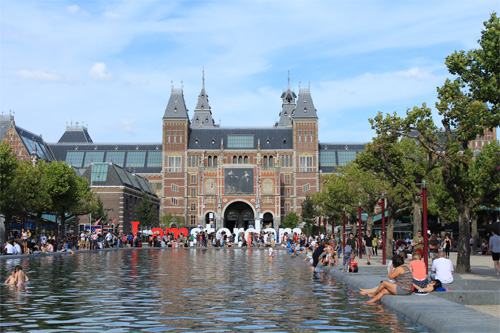
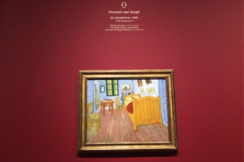

MUSEUM PLEIN
Full-immersion into the Dutch art
Amsterdam is brimming with all kid of arts, and you can see a lot of the city’s best all in one district: the musemplain. In this area, there are three major museums: Van Gogh Museum, Stedelijk Museum, and the Rijksmuseum.
1. The Van Gogh Museum has the largest collection of paintings and drawings from the namesake artist as well as it features artworks from other painters who were contemporaries to Van Gogh. It has grown into one of the most popular institutions of its kind in Europe as it gives a unique experience of standing face to face with one of the 19th century's most fascinating artists.
2. The Stedelijk Museum delivers the best of Amsterdam’s modern and contemporary art, with work from locals as well as world-known artists, like Picasso or Warhol.
3. Then there is the Rijksmuseum, which has thousands of pieces by some of the greatest names in Western art, like Rembrandt and Vermeer.
 